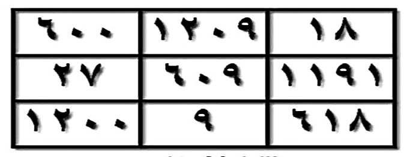
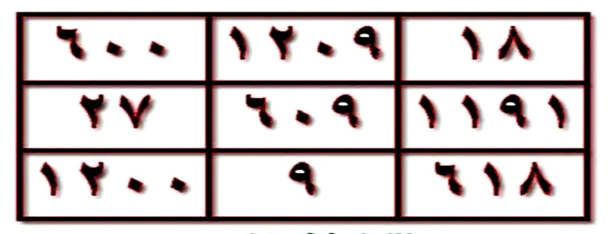

HALAMAN 12 — FAEDAH QATHI'AH 2/2 — WAFAQ 3×3 ### arab فَائِدَةٌ قَاطِعَةٌ لِعِلَاجِ الْمَسِّ وَفْقٌ لِعِلَاجِ الْمَسِّ | ١٨ | ١٢٠٩ | ٦٠٠ | | ١١٩١ | ٦٠٩ | ٢٧ | | ٦١٨ | ٩ | ١٢٠٠ | الشَّيْخُ الْبَشِيرُ مُنْتَدَى الْأَنْوَارِ الْقَادِرِيَّةِ وَالْأَرْوَاحِ الرَّحْمَانِيَّةِ http://www.alanwaralqadria.com كِتَابَةُ الْآيَاتِ وَالسُّوَرِ تَبْدَأُ مِنْ فَوْقِ الْوَفْقِ مِنْ جِهَةِ الْيَمِينِ اتِّجَاهًا إِلَى الْيَسَارِ، وَفَّقَكُمُ اللهُ لِمَا يُحِبُّهُ وَيَرْضَاهُ ### latin Wafqun li'ilājil-massi, kitābatul-āyāti was-suwari tabda'u min fawqil-wafqi min jihatil-yamīni ittijāhan ilal-yasāri, waffaqakumullāhu limā yuhibbuhu wa yardhāh. ### Terjemahan Faedah pemutus untuk mengobati kerasukan. Wafaq untuk mengobati kerasukan. Syeikh Al-Basyir. Forum Cahaya Al-Qadiriyah dan Ruh-Ruh Ar-Rahmaniyah. http://www.alanwaralqadria.com. Penulisan ayat-ayat dan surah-surah dimulai dari atas wafaq dari arah kanan menuju ke kiri. Semoga Allah memberi taufik kepada kalian pada apa yang Dia cintai dan ridhai. ### 4. Syarah dan Penjelasan Wafaq 3×3 angka Hal12 adalah wafaq 'adadi mu'addal khusus Faedah Qathi'ah — bukan wafaq Ghazali 15. Angka: 18 (baris1 kanan), 1209, 600; 1191,609,27; 618,9,1200 — jika dihitung: 18+609+1200=1827? 600+27+9=6036? Konstanta tidak 15 seperti mutsallats klasik, tapi mizan khass untuk mass. Cara tulis: mulai dari atas kanan ke kiri — sesuai kaidah kuttab Arab (kanan dulu). Doa waffaqakumullah = penutup adab. ### 5. Khususiyah dan Tatacara Praktik Tata cara sama Hal11 — wafaq ini yang ditulis di bejana. Tulis angka dengan tinta misk, kelilingi 5 surah/ayat Hal11 dari atas kanan ke kiri. Mahw dengan air thahir + telunjuk kanan 7×.  [Gambar: Wafaq Hal 12 — 3×3 — salin persis crop IMG_20261025_073117.jpg — hal12_crop_sharp.jpg — 35KB tajam] ## HALAMAN 13 — ZAJR QATHI' 1/3 — الزَّجْرُ الْقَاطِعُ لِأَخْذِ الْعَهْدِ ### arab الزَّجْرُ الْقَاطِعُ ل

